Chichibu
I woke up on the 26th bright an early, ready for a decent bit of travelling ahead of me. What i was not ready for though was torential rain outside, it was properly tipping it down. Which sucks, but oh well, so i began packing up my things, and getting everything sorted, aswell as running over to the store to
grab an umbrella, as im japan, one cannot go out in the rain without an umbrella. I did proceed to procrastinate a bit, but i ended up leaving at 11 to catch the 12o'clock train to chichibu.
As i arrived at the departing station, in typical me fashion, the train i was planning to go on was fully booked, so i had to wait
an hour until the next train 😭. Luckily there was a cafe in the station, so i grabbed a coffee and tried to make that last as long as possible. Eventually the train did arrive, with an interesting lemon yellow felt interior. Definitely a relic of a different time... But this train was pretty empty, and i could place my suitcase
in the footwell of the seat next to me, as it was just too big to fit in the overhead section.
The train took about an hour and a half, and i could already begin to feel the mountains creeping in throughout the train ride, with them coming closer and closer, as the train climbed up towards Saitmana. Once i arrived i found the neccesary bus,
luckily for me, there are only 2 buses a day that run to a station near the hostel, and the afternoon one (the first one being at 8am) was only 20mins from me arriving! So i hopped onto that and drove the last 40mins to the hostel. It wasnt a nice walk to my hostel on the rain, and even less fun was that the hostel didnt open for check in for another 15mins!
which doesnt feel really smart, as thats the only bus that comes and it arrives before check in. But once they arrived they quickly put on a woodfired stove and i was toasty in no time. For the next 2 nights i will be staying in a tradiotnal japanese ryukan, or traditional inn, with tatami mats, sliding doors the lot. There was definitely a learning curve with the mats,
as you use slippers in the house but *not* on the mats, so lots of on and off with them, but i got there in the end. Dinner was cureted by them, and was tradiotnal meals from seasonal produce, and it all tasted declicious. My plan for my whole day was to just walk, and see as much of the mountains as possible.
I got up bright and early, since there are no curtains,
and the entire wall is glass, very much early, and very much bright. But luckily the rain had stopped! butwas still cloudy. I was served breakfast and i talked wit the owner for a bit, he seems to know the area quite well, and gave me some tips on walking around here, with it raining the day before, and i eventually made a route and set off at 10.
The walk
went along a path a little way up from the main mountain road, following the natural route of the mountain, it was a bit precarious in parts, with the leaves not decomposing, so the path was covered, ankle deap in places, but generally the path was well marked. There were a few points of interest, with quite a few shrines, and more importantly a tunnel, that was handcarved in the early
19th century to make travel through the mountains easier.
I eventually get to a small village, no more than 6 or 7 houses, where there is a shrine, as i was looking at the shrine, a small dog ran up to me to say hello, and we became fast friends, as i was leaving though, he followed me, and continued for a good half hour. When i got back to the hostel and talked to the owner (of the hostel,
not the dog) it turns out hes a stray, and has been in that area for a good 4/5 years. I eventually got down to the main road again, and here i decided to go a bit further, and go up to a shrine thats about 3km away, but 700m of climbing, as i had time. However 3 "beware of bear" signs in quick succesion put me a bit on edge (yes, bears do hibernate until end march, but with global warming and all)
and ne being alone without a bear bell, when i came to a collapsed brudge over a small stream, i took the excuse to turn back. I decided then that i would take a bus further down the mountain to a bigger village, thats only a half hour walk from the hostel, and explore that. Which i did, but by that point it was getting onto lunch time and i was getting hungry, i had brought some snacks for the walk,
but being in the first main town from the mountains, surely it will have some food. This led me down a 2hour rabbit hole to find some food, where i eventually walked down the side of the main mountain road almost down to chichibu to find some food, This walk however was really quite eye opening. As ive heard alot of news about how rural japan is dying, but i could really sense the scale of it here.
The people here were old, the houses run down, and it felt like it had had no upgrades in at least 20years. This food for thought lasted me until i found a place that was open, which was a quite fancy hotpot style resteraunt, except you fry your food on a hot stone. I did get some weird looks in my muddy walking gear, and being a tourist. I ordered chicken and pork, with loads of extras, they even gave me a
small taste test of boar and venison, they were both delcious! I ended up chatting to the waiters, with them quite curious how i ended up in the middle of nowehre japan. But theyre were all really kind and nice, with one of them even giving me a small handmade bear bell 🥺. Im not quite sure how far i walked in the end, but my feet could feel it, and i was happy to get home and lie down and have dinner.
Of course te next day, the day i was meant to leave, the sun finally came out and it being glorious weather, typical. The owner gave me a lift down to te station where i then boarded a train heading to shinjuku. Where my next hostel is. As it was still quite early i decided today i would treat myself, and i went to akhibara to look at magic cards. Since the format thats played in japan is different to the one that i
play, alot of cards are subsantially cheaper here than in denmark, even in englsih printings, I spent a good 2hours, and a quite a few thousand yen on cards, but it was worth it
Chichibu has so far been my favourite part of the trip, with its glorious mountains, kind people and good food. There was nothing i didnt like. And if i ever come back to japan, this will definitel be on my list of places to go to again.

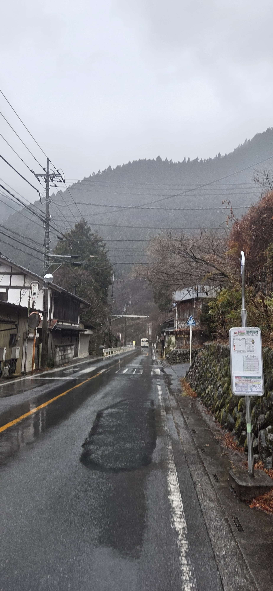
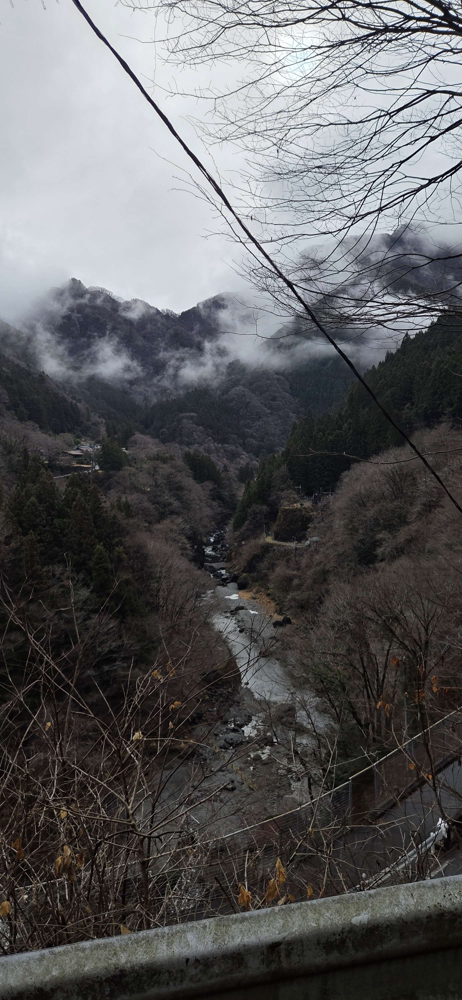
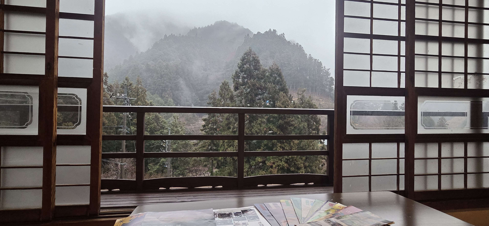
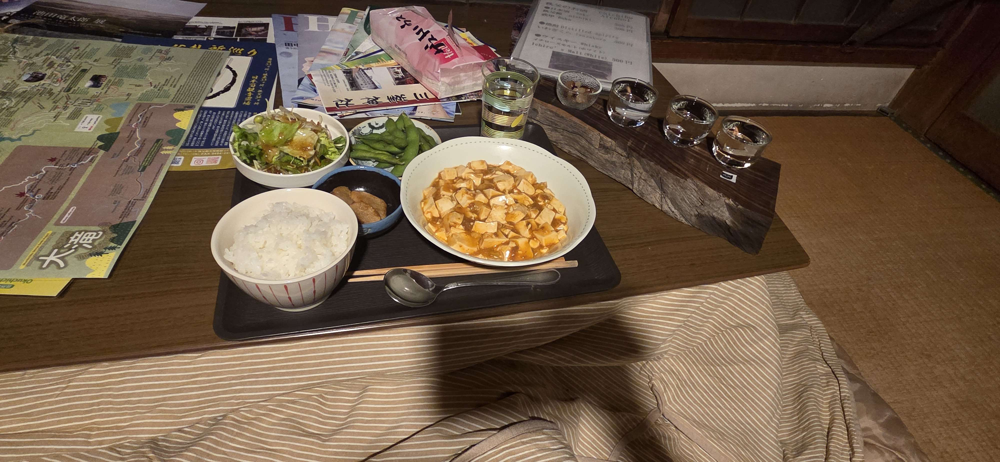
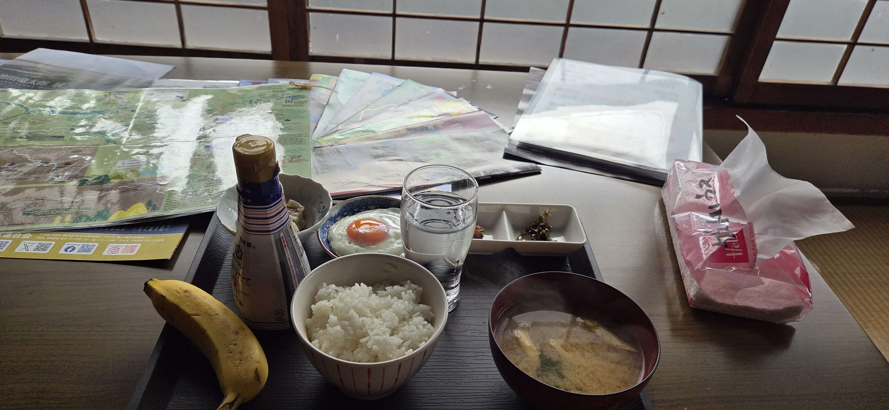
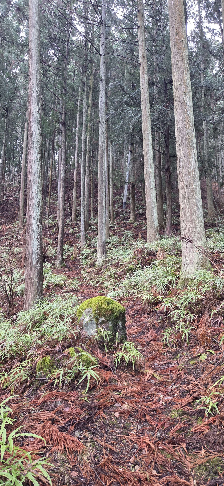
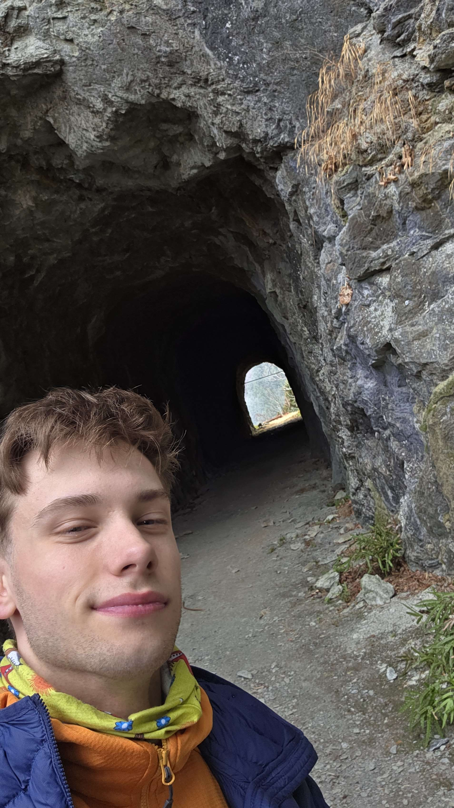
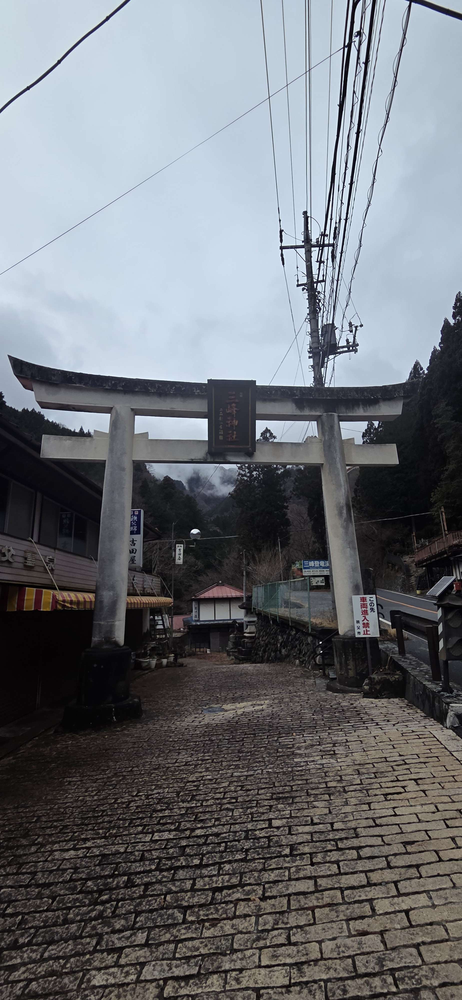

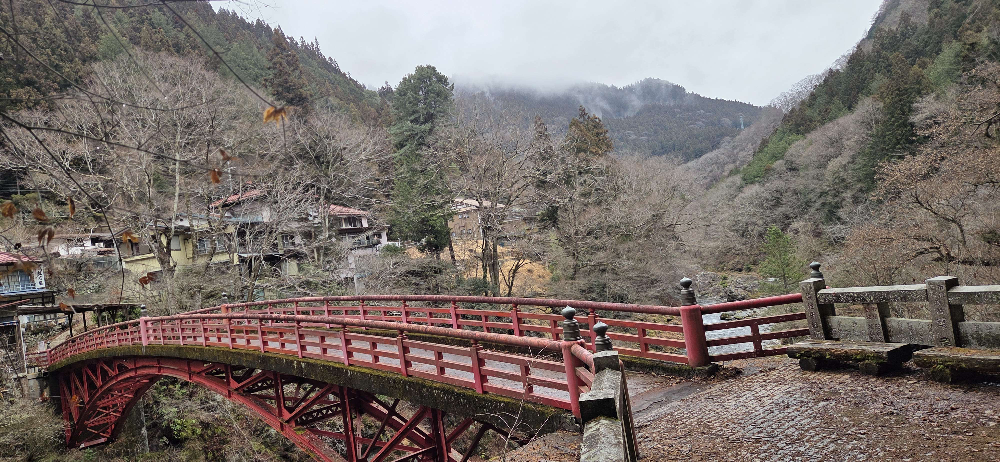
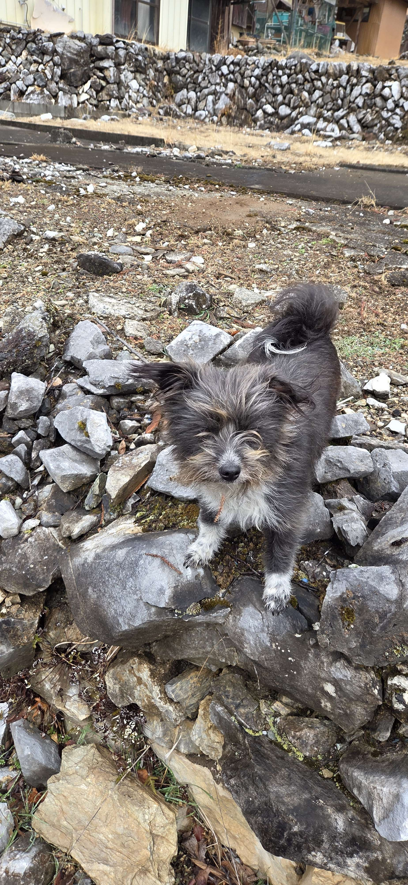
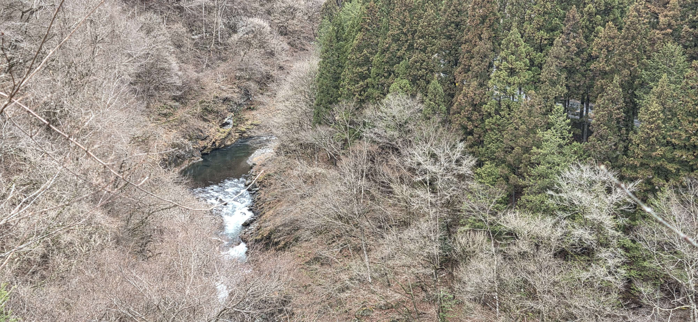
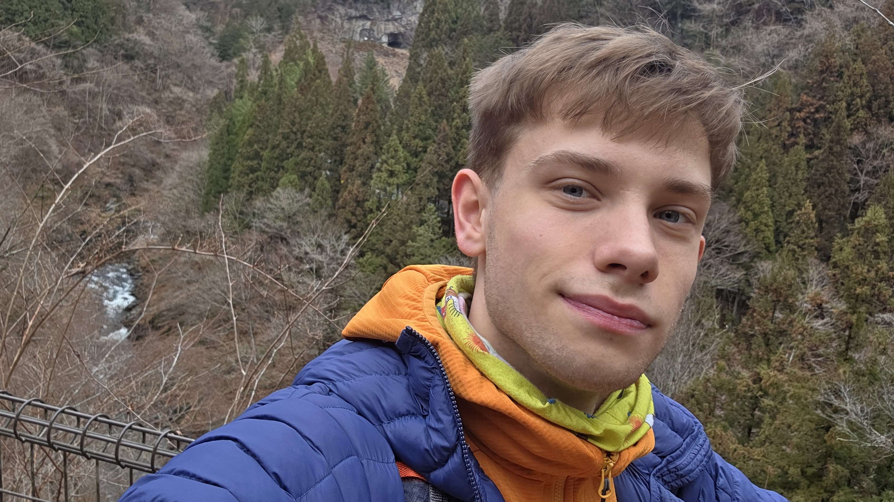
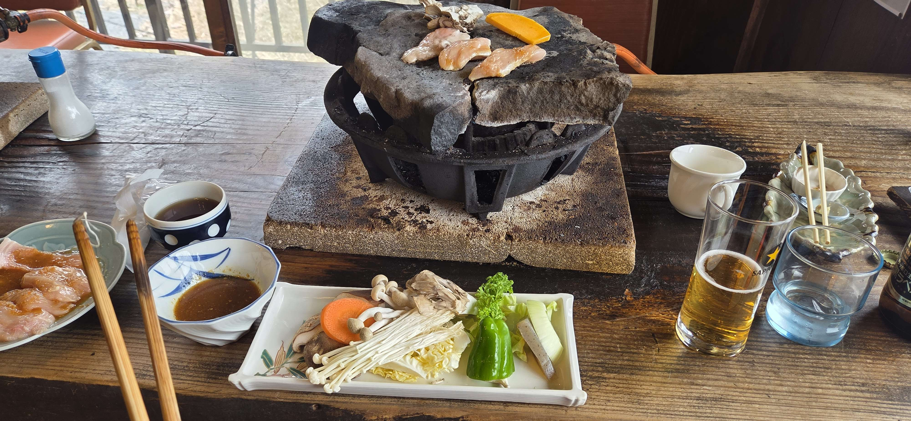
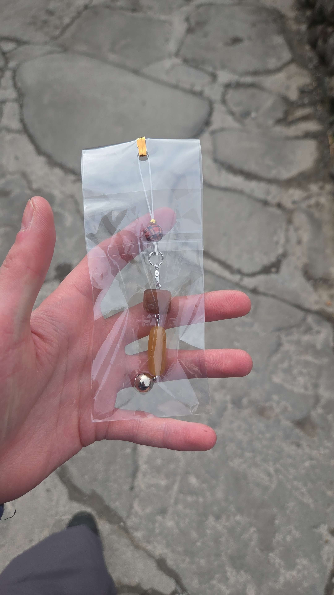
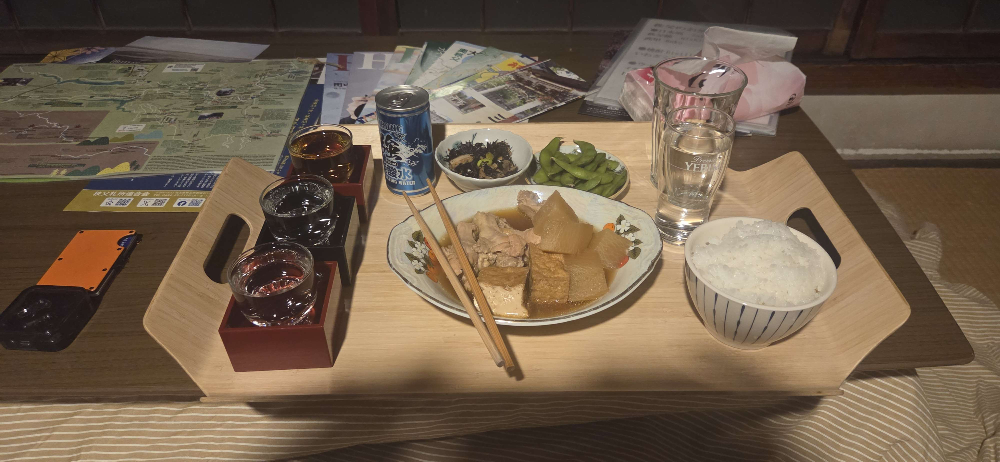
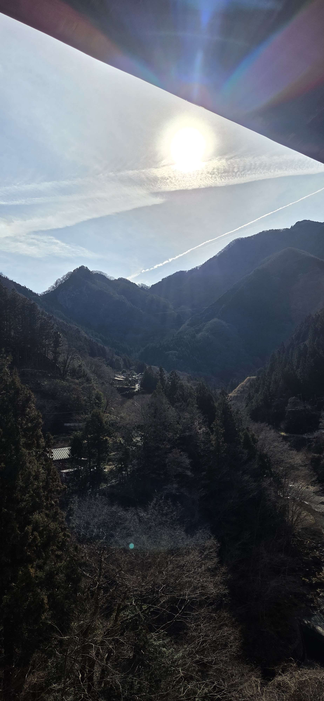